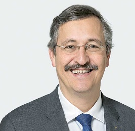
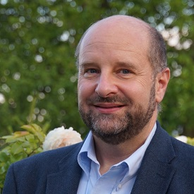

| Prof. Dr. Michael Hengartner |  |
| Rektor der Universität Zürich | |
| Präsident des ETH-Rats | |
| Prof. Dr. Beatrice Beck Schimmer | |
| Direktorin Universitäre Medizin Zürich | |
| Universitätsspital Zürich | |
| Prof. Dr. Adriano Aguzzi |  |
| Direktor des Instituts für Neuropathologie | |
| Universitätsspital Zürich |